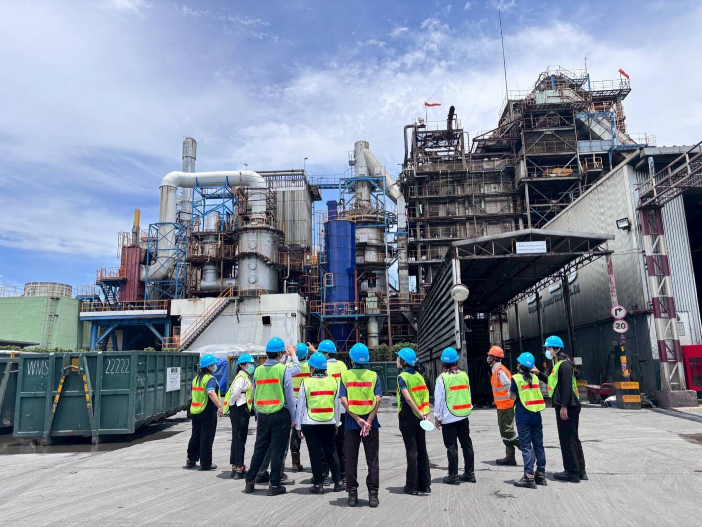
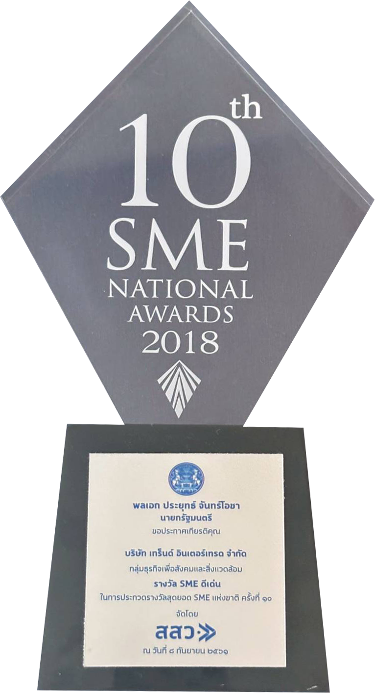
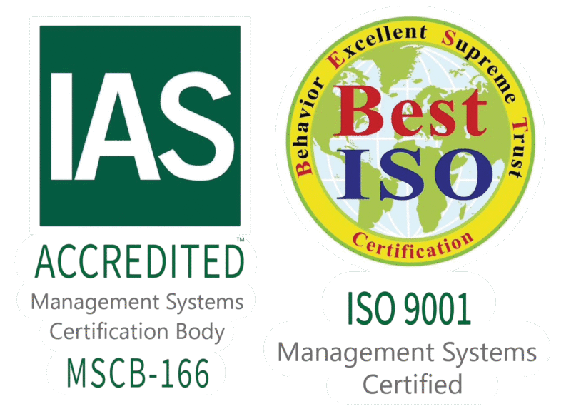

บริษัท เทร็นด์ อินเตอร์เทรด จำกัด ผู้ดำเนินงานศูนย์ I-TEC ได้รับใบอนุญาตเก็บขนมูลฝอยติดเชื้อรายแรกของประเทศไทย
การจัดการขยะติดเชื้อและขยะอันตรายทางการแพทย์ในประเทศไทยยังเป็นปัญหาที่ต้องจัดการอย่างต่อเนื่อง ปริมาณมูลฝอยติดเชื้อเพิ่มขึ้น และต้องทำลายเชื้อด้วยระบบเตาเผาอุณหภูมิสูงปลอดมลพิษ
ศูนย์ I-TEC บริหารจัดการจัดเก็บ ขนส่ง และกำจัด ถูกต้องตามหลักวิชาการและกฎกระทรวงว่าด้วยการจัดการมูลฝอยติดเชื้อ พ.ศ.2545 บริหารองค์กรอย่างเป็นระบบตาม ISO 9001:2015 ควบคุมความเสี่ยง และพัฒนาอย่างต่อเนื่อง


รางวัลจากนายกรัฐมนตรี กลุ่มธุรกิจเพื่อสังคมและสิ่งแวดล้อม

ได้รับรองด้านงานบริการ
เก็บขนมูลฝอยติดเชื้อรายแรกของประเทศไทย
การป้องกันและระงับการแพร่เชื้อ หรืออันตรายจากมูลฝอยติดเชื้อ
รถควบคุมอุณหภูมิตามกฎหมาย ติดตามด้วย GPS กำกับด้วย Manifest / E-Manifest
ขึ้นทะเบียนผู้ประกอบการ SME เพื่อการจัดซื้อจัดจ้างภาครัฐ
30 ภาพจากหน้างานจริง